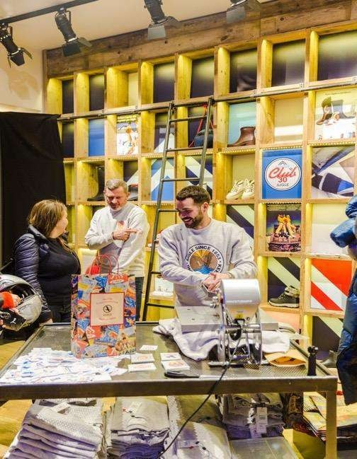

Objectif
Retour aux références
Aigle · 2019
Aigle - Winter Club 30
Retail experience, influence, RP, street marketing
Projet réalisé dans le cadre du parcours professionnel antérieur de Lucie Ramon.

AigleRetail experience, influence, RP, street marketingPilotage d'expériencesPreuve image
AigleRetail experience, influence, RP, street marketingPilotage d'expériencesPreuve image
Étude de cas
Contexte
Pour l'ouverture de la boutique Saint-Germain-des-Prés et la collection Automne-Hiver 2019, Aigle voulait créer une expérience immersive et affective.
Rôle de Lucie
- Création du concept Winter Club 30 : transformation du flagship en maison festive.
- Coordination de l'expérience RP et influence : soirée VIP, contenus, relais presse.
- Mise en place d'un jeu concours phygital avec opération de street marketing dans trois villes.
- Suivi du plan média digital et des retombées RP.
Chiffres & faits marquants
252 personnes présentes
18 influenceurs
300 cocktails
200 bières
222 sweats personnalisés avec Tealer
Accompagnement actuel
Transformer une ambition de marque en expérience visible et activable.
Studio Madame-L mobilise aujourd'hui cette expertise pour cadrer une stratégie, une campagne d'influence ou une activation, depuis Aix-en-Provence et partout en France.
Référence suivante